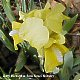
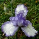
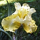
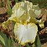
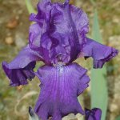
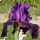
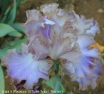

| Reblooming Irises at Sans Souci that blossumed Oct.-19-2007 | |||||
| IRIS TYPE & Bloom attribute | CULTIVAR Click on UNDERLINED Cultivar name to see larger picture | Hybridizer | Year Registered | Color description | Thumbnail Image click to go to page close page to return |
| Border Bearded rebloom | Pink Reprise [sorry, no picture yet] | Moores, Walter | 1991 | ||
| Dwarf Bearded Rebloomer | Rosalie Loving | Spoon, Donald | 2003 | ||
| Intermediated Bearded Rebloomer | Champagne Encore | Aitken, J. T. | 1997 | Peach Amoena | |
| Intermediated Bearded Rebloomer | I Bless | Zurbrigg, Lloyd | 1985 | ||
| Minature Tall Bearded Rebloomer | Lady Emma [sorry, no picture yet] | Jones, Frank | 1985 | Standards Dresden yellow,Falls primrose | |
| Standard Dwarf Bearded Rebloomer | Baby Blessed | Zurbrigg, Lloyd | 1979 | Yellow lightly ruffled with white spot on Falls. |  |
| Standard Dwarf Bearded Rebloomer | Blitz | Weller, J. | 1988 | Yellow S velvety dk yellow F | |
| Standard Dwarf Bearded Rebloomer | Orange Autumn | Spoon | 2003 | ||
| Tall Bearded Rebloomer | Again and Again | Innerst, Sterling | 1999 | ||
| Tall Bearded Rebloomer | Apollo's Robe | Carter, R. | 2003 | ||
| Tall Bearded Rebloomer | Autumn Bugler | Jones, Frank | 1986 | ||
| Tall Bearded Rebloomer | Autumn Twilight | Brown, G. P. | 1971 | Standards brownish yellow, Falls light yellow. | |
| Tall Bearded Rebloomer | Belvi Queen | Jenson, Carol | 1975 | Standards cinnamon edged darker, Falls white | |
| Tall Bearded Rebloomer | Billionare | Byers, Monty | 1987 | ||
| Tall Bearded Rebloomer | English Cottage | Zurbrigg, Lloyd | 1976 | Blue pale stitching on white | |
| Tall Bearded Rebloomer | Eternal Bliss | Byers, Monty | 1988 | ||
| Tall Bearded Rebloomer | Faithful and True | Spoon, Don and Ginny | 1998 | ||
| Tall Bearded Rebloomer | Feedback | Hager, Ben | 1983 | Violet medium Yellow beard | |
| Tall Bearded occasional rebloom | Light Rebuff | Smith, Raymond | 1990 | ||
| Tall Bearded Rebloomer | Luminosity | Byers, Monty | |||
| Tall Bearded Rebloomer | Maryland Ho | Hornstein, L. Bruce | 2003 | ||
| Tall Bearded Rebloomer | Nancy De Wolf | Hornstein, L. Bruce | 2004 | ||
| Tall Bearded Rebloomer | Northward Ho | Zurbrigg, Lloyd | 1990 | Standards pink brown blend, Falls white | |
| Tall Bearded Rebloomer | Now and Later | Zurbrigg, Lloyd | 1970 | Pink salmon self deep salm-pink bud | |
| Tall Bearded Rebloomer | Patty Ann [sorry, no picture yet] | Stanek, Tim | 2006 | ||
| Tall Bearded Rebloomer | Pink Attraction | Hall, Earl | 1987 | ||
| Tall Bearded Rebloomer | Queen Dorothy | Hall, E. | 1984 |  | |
| Tall Bearded Rebloomer | Redelta | Smith, Raymond | 1993 | ||
| Tall Bearded Rebloomer | Red Revival | Preston, Frank | 1977 | ||
| Tall Bearded Rebloomer | Rosalie Figge | McKnew | 1993 | Violet deep with a touch of white | |
| Tall Bearded occasional rebloom | Sea Fluff | Smith, Raymond | 1993 | ||
| Tall Bearded Rebloomer | September Replay | Jones, Frank | |||
| Tall Bearded Rebloomer | Silver Dividends | Zurbrigg, Lloyd | 1989 | Irridescent silvery white with a white beard | |
| Tall Bearded Rebloome | Sunny Disposition | Zurbrigg, Lloyd | 1989 | Near primrose yellow with a yellow beard |  |
| Tall Bearded Reblooms ? | Swiss Majesty | Zurbrigg, Lloyd | 1969 | ||
| Tall Bearded Rebloomer | Zurich | Byers, Monty | 1990 | ||
| In bloom Nov.-02-2007 | |||||
| Standard Dwarf Bearded Rebloomer | Hot | Byers, Monty | 1989 | ||
| Standard Dwarf Bearded Rebloomer | Little Showoff | Hall, E. | 1989 | ||
| Standard Dwarf Bearded Rebloomer | Luminescent Perl, Sdlg. [sorry, no picture yet] | Hornstein, L. Bruce | Pearly white self with yellow beard | ||
| Standard Dwarf Bearded Rebloomer | Plum Wine | Weiler, J. | 1986 | Red-plum satiny red violet beard | |
| Tall Bearded Rebloomer | Autumn Circus | Hager, Ben | 1990 | ||
| Tall Bearded Rebloomer | Autumn Encore | Mohr, K. | 1977 | ||
| Tall Bearded Rebloomer | Harvest of Memories | Zurbrigg, Lloyd | 1984 | ||
| Tall Bearded Rebloomer | Hindenburg | Maryott, W. | 1983 | ||
| Tall Bearded Rebloomer | Her Royal Highness | Byers, Monty | 1988 | ||
| Tall Bearded Rebloomer | Iceland [sorry, no picture yet] | Byers, Monty | 1991 | ||
| Tall Bearded Rebloomer | Istanbul | Byers, Monty | 1990 | ||
| Tall Bearded Rebloomer | Matrix | Hall, Earl | 1990 | Cinnamon self |  |
| Tall Bearded Rebloomer | Purple Magic | Spoon, Donald | 1997 |  | |
| Tall Bearded Rebloomer | Witch of Endor | Miller, Bernice | 1977 | ||
| In bud Nov.-02-2007 frost prevented blooms opening | |||||
| Tall Bearded occasional rebloom | I'm Reddy | Roberts, Joan | 2003 | ||
| Tall Bearded Rebloomer | Twilight Fancies | Zurbrigg, Lloyd | 2001 | ||
| Tall Bearded Rebloomer | Midnight Caller | Byers, Monty | 1990 |  | |
| Tall Bearded Rebloomer | Joan's Pleasure | Zurbrigg#Lloyd | 1992 |  | |